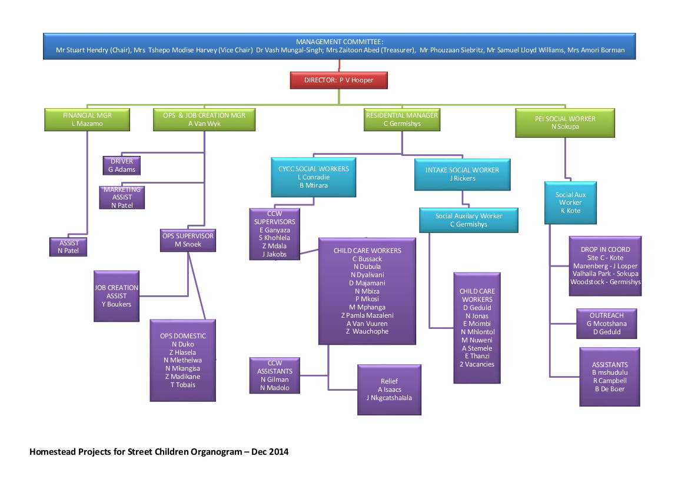

More Info

1982 – The Homestead, the first shelter for street children in Cape Town, and indeed in South Africa, was opened in July 1982
in a building in New Church Street,
the use of which was donated by St Paul’s Anglican Church.
1984 – The Homestead was registered as a place of care for 16 boys between the ages of 6 and 16.
1985 – An Activity Centre was opened in Harrington Street.
1986 – The need or a second stage home for those boys who had become more settled at The Homestead was identified
and in July Patrick’s House was opened in Hope Street,
occupying a building rented from the Catholic Church for a nominal fee.
1988 – Patrick’s House was registered as a Children’s Home for 30 boys who were formerly street children.
1989 – “Learn To Live”, a non-formal Education Project for street children, was designed and implemented by The Homestead
in response to the fact that so few street children
manage to cope within the formal school structure. This programme was subsequently taken over by The Salesian Institute in Somerset Road, where it is flourishing.
1990 – Major renovations were undertaken at The Homestead to extend the facility to 24 boys.
This is, however, the minimum number, often there are over 30 children. The highest figure recorded in any one night was 58.
1991 – The Homestead established the post of Street Worker, the first of its kind in South Africa.
1992 – Yizani Drop-In Centre was opened.
1992 – Patrick’s House premises in Hope Street were sold, and it moved to The Salesian Institute in Somerset Road,
which had facilities to accommodate 40 boys